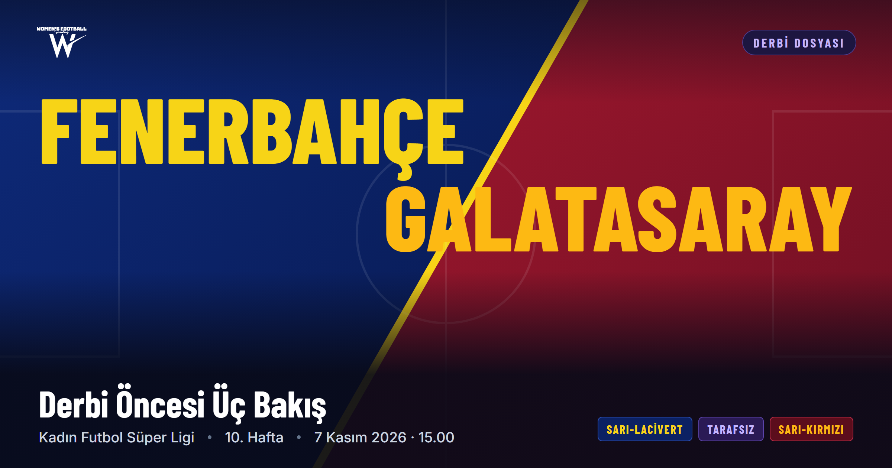
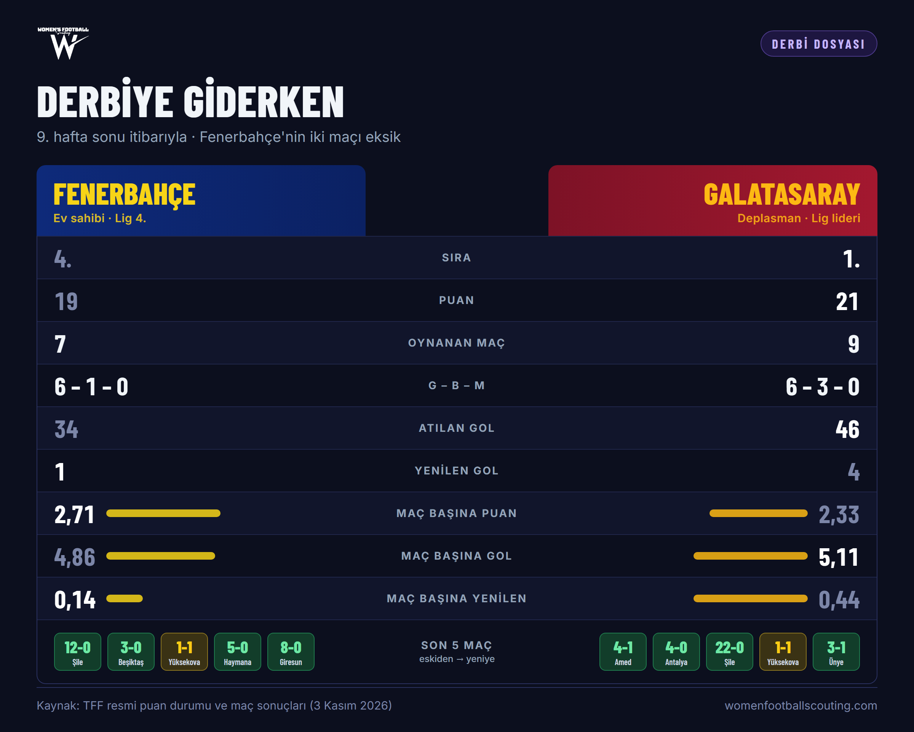
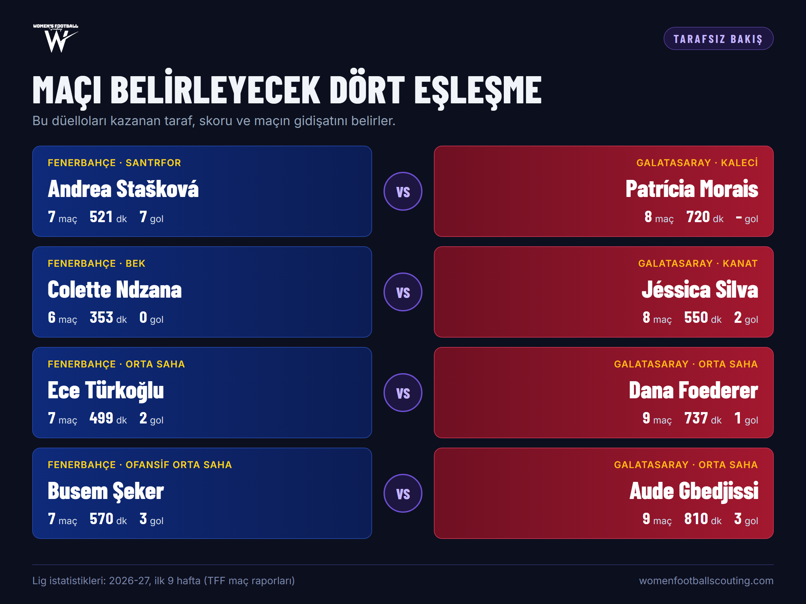
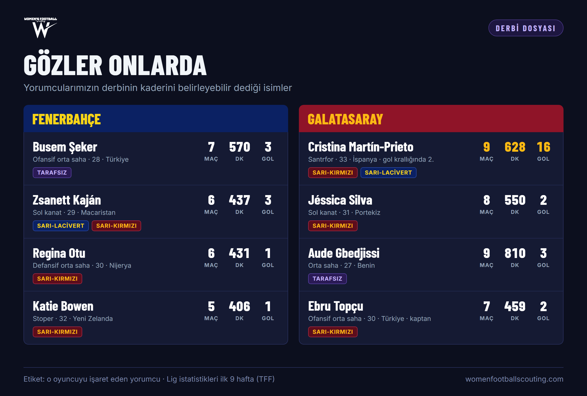

Derbi Öncesi Üç Bakış: Fenerbahçe – Galatasaray
Ligin yenilgisiz takımlarından ikisi cumartesi Dereağzı'nda karşı karşıya. Derbiyi üç yorumcuya sorduk: biri maça sarı-lacivert, biri sarı-kırmızı pencereden, biri de iki takımın oyun kimliği üzerinden bakıyor.

Kadın Futbol Süper Ligi'nde 10. haftanın en büyük maçı cumartesi saat 15.00'te oynanacak. Dokuz haftada yenilgi yüzü görmeyen Galatasaray 21 puanla zirvede. Fenerbahçe ise iki maçı eksikken 7 maçta 19 puan topladı ve kalesinde yalnızca bir gol gördü. Eksik maçlarını kazanırsa 25 puana çıkabilecek sarı-lacivertlilerle liderliği bırakmak istemeyen sarı-kırmızılılar arasındaki bu maç, sezonun ilk yarısındaki şampiyonluk yarışını doğrudan etkileyecek.
Derbiye giderken üç yorumcuya aynı temalarda, ama her birinin bakış açısına göre şekillenen sorular yönelttik: maçın atmosferi, takımların son durumu, oyun kurgusu, kilit oyuncular, senaryolar ve skor tahmini. Yazının sonundaki Veri Masası'nda ise sitenin verisiyle ilk 11 tahminlerini, altı animasyonlu senaryoyu ve iki takımın güçlü ve zayıf yanlarını bulacaksınız.
Yorumcularımız hakkında
Üç yorumcumuz da isimlerinin yayımlanmamasını istedi. Bu yüzden onları maça baktıkları pencereyle tanıtıyoruz.
Instagram'da görüntüle: @kadinfutbolfb
Instagram'da görüntüle: @kadinfutbolgs

Tarafsız Bakış
Derbiyi iki takımın oyun kimliği, kilit eşleşmeler ve maçın olası kırılma anları üzerinden okuyor.
Ligin yenilgisiz takımlarından ikisi karşılaşıyor. Bu derbinin şampiyonluk yarışındaki ağırlığı ne kadar?
Bu maçı kazanan, çok net bir şekilde sezonun ilk yarısının sonuna kadar ivmesini koruyacak ekip olarak karşımıza çıkacak. Galatasaray'ın kazandığı senaryoda kartlar yeniden dağıtılır. Fenerbahçe'nin kazandığı senaryoda ise, eksik maçlarını da kazanması koşuluyla, Fenerbahçe yarışta ciddi bir fark yakalamış olacak.
Galatasaray 21 puanla lider, Fenerbahçe iki maç eksiğiyle 19 puanda. Puan durumu iki takımın maça yaklaşımını nasıl şekillendirir: kim risk alır, kim bekler?
Skor ne olursa olsun iki takım da ikinci yarının 55-75. dakikaları arasında büyük bir risk alacaktır. Ancak daha çok saldıran taraf Galatasaray olacak, çünkü takımın oyun kimliği ve oyuncu rolleri beklemek ve savunma yapmak üzerine kurulu değil.
İki takımın oyun kimliklerini karşılaştırırsan, maç hangi bölgede ya da hangi eşleşmede kazanılır?
İki takım da topa sahip olma oyununu sahayı genişleterek oynama prensibine sahip. Bu nedenle yanal pasların yoğun olduğu, kanattaki oyuncuların merkeze, merkezdeki oyuncuların çizgiye kaydığı anlarla dolup taşan bir maç izleyeceğiz. Oyunun dört kilit eşleşmesi var: Andrea Stašková – Patrícia Morais, Jéssica Silva – Colette Ndzana, Ece Türkoğlu – Dana Foederer ve Busem Şeker – Aude Gbedjissi. Bu eşleşmelerin galibi skoru ve maçın gidişatını belirler. Bu eşleşmelerde erken değişiklik yapıp sorunu çözen teknik direktör ise ligin sefiri konumuna gelir.

Maçın ana faktörü olabilecek iki oyuncu, her takımdan birer isim kimler?
Galatasaray'da Aude Gbedjissi, Fenerbahçe'de Busem Şeker.
İki teknik direktörün tercih etmesi muhtemel dizilişler göz önüne alındığında, sahanın hangi bölümünde taktiksel bir üstünlük savaşı bekliyorsun?
Her iki takımın da geniş alan savunmasında zaaflar yaşadığı aşikâr. Savunma kenarı, basit anlamda beklerin savunma zaafiyetleri, bilhassa savunma geçişlerinde ciddi risk barındırıyor. Bu durum, iki takımın beklerinin de asıl bek yetkinliklerine sahip olmamasından kaynaklanıyor; bu noktada Galatasaray bir tık geride. Buna karşılık iki takımın da kenar hücumcuları çizgi koşucusu değil, ikisi de beklerinden fazlasıyla destek alan bir oyun anlayışına sahip. Maçı böyle okuduğumuzda, mücadelenin merkezde çok yoğunlaşacağını ve çoğu zaman kilitleneceğini düşünüyorum. Lakin oyun kenarlara yığıldığı anda bire bir eşleşmeler hem göze hoş gelecek hem de bir takım için sorun yaratacak. Bu anlarda daha konsantre olan mevki oyuncusu takımına katkı sağlayacaktır.
Kadın futbolunda derbi gibi kilit maçlarda duran topların skora etkisi çok yüksek. İki takımın duran top organizasyonlarını ve eşleşme stratejilerini nasıl kıyaslarsın?
İki takım da ligde henüz duran toplara ihtiyaç duyacağı bir mücadele oynamadı, çünkü ikisi de oyunu domine ettikleri maçlar oynadı ve genel prensipleri de bu yönde. Lakin bu maçta puana ihtiyacı olan takım Galatasaray. Fenerbahçe yine topa hâkim bir oyun oynamak isteyecek, ama maça daha sakin bir oyun anlayışıyla ağırlık koyacaktır. Bu bağlamda Fenerbahçe'nin duran top organizasyonlarına daha çok çalıştığını ve duran toplardan Galatasaray'a göre daha fazla skor üretmeye çalışacağını düşünüyorum.
Fenerbahçe'nin ön alanda kuracağı muhtemel baskıya karşı Galatasaray'ın geriden oyun kurma tercihleri risk-ödül dengesi açısından nasıl yönetilmeli?
Ben bu baskıyı daha çok Galatasaray'ın yapacağı kanaatindeyim, çünkü Galatasaray skor almak zorunda ve bu maçta saldıran taraf onlar olacak. Asıl risk Fenerbahçe için var: Avrupa maçlarında gördük ki Fenerbahçe önde baskıya gelemiyor ve basit hata oranı yükseliyor. Bu noktada stoperlerin ve merkez oyuncularının bağlantı oyunu önem kazanıyor; Fenerbahçe bu konuda da başarılı değil, oyunu hızlıca, kenarlara uzun oynayarak açmayı tercih ediyor. Bu yüzden asıl ön alan baskısını Galatasaray'ın yapacağını ve başarılı olma ihtimalini yüksek gördükleri bu oyunu ilk dakikadan itibaren sahaya yansıtacaklarını düşünüyorum.
60. dakikadan sonra takımların direnç ve dayanıklılık zaafları ortaya çıkıyor, hatlar arası mesafe uzuyor. Bu açıdan bakınca, ikinci yarının son bölümünde geçiş savunmasında hangi takımın daha disiplinli kalacağını öngörüyorsun?
Bu, tercih edilecek ilk 11'lere göre değişecektir; bir takımın süper yedek ya da oyunu değiştirecek bir oyuncuyu kenarda saklayıp saklamayacağını göreceğiz. Lakin şunu söyleyebilirim: Türkiye'deki her takım, hatta milli takımlar da dahil, Avrupa standartları göz önünde bulundurulduğunda direnç ve dayanıklılık konusunda sınıfta kalıyor. Bunu en iyi, Türkiye'de yetişip yurt dışında bir takıma transfer olan futbolcular anlar; ilk antrenmanda fark ederler. Bu durum bu derbinin kilit noktalarından biri. Hangi takımın erken yorulacağını ya da hangisinin daha temkinli olacağını tahmin etmek zor. Lakin 55-75. dakikalar arasında sertleşeceğini, dinamikleşeceğini ve yoğunlaşacağını düşündüğüm oyunda 75. dakikada kim kesilmezse ya da oyuna kim daha dirençli oyuncu sokabilirse, galibiyete en yakın taraf o olur.
Erken gol gelirse ya da skor uzun süre dengede kalırsa nasıl bir maç izleriz? Skor tahminin nedir?
Erken gol ihtimali çok düşük. Ama gelirse, yankısı iki takımda da şiddetli ön alan baskısı ve topa sahip olma isteği olarak kendini gösterecek. Galatasaray erken öne geçerse Fenerbahçe önde baskı kuracak. Fenerbahçe erken öne geçerse psikolojik olarak geri çekilecekler ve Galatasaray çok daha yoğun ataklar geliştirecek. Skor tahminim 1-2: Galatasaray kazanır.
Sarı-Lacivert Bakış
Fenerbahçe'yi yakından takip eden yorumcumuz, ev sahibinin planını, zaaflarını ve derbiye yaklaşımını değerlendiriyor.
Fenerbahçe tarafında derbi heyecanı nasıl? Ev sahibi olmak ve seyirci ne kadar belirleyici olur?
Bence iki takım da ligdeki en iyi takımın kim olduğunu kanıtlamak isteyecek. Fenerbahçe özelinde, Avrupa maçı arifesinde olunması sebebiyle kaybetmeme isteğinin yüksek olduğunu hissediyorum. Alışkın olduğun, her gün antrenman yaptığın yerde oynamak elbette bir avantaj. Seyirci ise iki taraf için de motivasyon kaynağı olur.
Fenerbahçe 7 maçta yalnızca 1 gol yedi ve iki maçı eksik. Takımın son durumunu ve bu savunma istikrarını nasıl açıklıyorsun?
Bu performansı hocaya ve oyun istikrarına bağlıyorum. Takımın belli zaafları var ama güçlü yanlarını öne çıkaracak yolları buluyorlar.
Galatasaray'ın hücum gücüne karşı Fenerbahçe'nin planı ne olmalı? Takımın artıları ve zaafları neler?
Bana göre Fenerbahçe'nin böyle bir maç için iki büyük zaafı var. Takım kanatlarda savunma anlamında sıkıntı yaşayabiliyor. Hücum geçişlerinde de topu taşıyabilecek hızlı bir oyuncu eksik. Plan, yüksek konsantrasyonlu ve sert bir savunma anlayışıyla hücumculara topun ulaşmasını engellemek olabilir.
Fenerbahçe'de maçın yıldızı kim olabilir, neden?
Zsanett Kaján. Hücumda şapkadan tavşan çıkarma ihtimali en yüksek oyuncunun o olduğunu düşünüyorum.
Bu derbi, iyi oynayan oyuncular için nasıl bir vitrin olur? Bu maçla adını duyurabilecek bir isim var mı?
Derbide gol atan, iyi performans gösteren oyuncu elbette büyük bir vitrin yapacaktır. Prieto son vuruş kalitesiyle ülke çapında gündem olmaya aday.
Maç nasıl bir senaryoyla akar? Skor tahminin nedir?
Açıkçası Fenerbahçe açısından biraz kontrollü bir oyun bekliyorum. Galatasaray'ın ön alanda baskılı oynayacağını, rakibini hataya zorlayıp skor arayacağını tahmin ediyorum. Fenerbahçe ise artık takım olarak bu tuzağa düşmeyecek tecrübede. 0-0 beraberlik bekliyorum.
Sarı-Kırmızı Bakış
Galatasaray'ı yakından takip eden yorumcumuz, liderin deplasmandaki kozlarını, açıklarını ve derbi senaryosunu anlatıyor.
Derbi haftasına girerken Galatasaray cephesinde hava nasıl? Bu maçın kadın futboluna olan ilgiye katkısını nasıl görüyorsun?
Açıkçası ne ulusal basında ne de camianın genelinde belirgin bir ilgi oluştuğunu söylemek zor. Deplasmana gitmeyi planlayan bir taraftar grubunun ya da bunu organize etmeyi düşünen bir yönetimin ortada olmaması da bunu gösteriyor. Elbette maçın federasyonun YouTube kanalından yayınlanması, algoritmanın hedefli önerileri sayesinde karşılaşmayı pek çok kişinin önüne düşürecek ve sosyal medyada belirgin yansımaları olacaktır. Ama bu da oyunun kaderine ve üreteceği magazine bağlı. Öte yandan Galatasaray cephesinde, bilhassa oyuncu grubunda ve teknik ekipte, konsantrasyonun bir an bile düşeceğini düşünmüyorum. Ligde şu ana kadar alınan yaralar ve maçın isminin büyüklüğü takımı sahaya kilitleyecektir.
Galatasaray 9 maçta yenilgisiz, 46 gol atıp sadece 4 gol yedi. Ama Yüksekova deplasmanındaki 1-1 gibi takıldığı maçlar da oldu. Takımın şu anki formunu nasıl değerlendiriyorsun?
Takım açıkçası bireysel yetenekle ve oyunu olabildiğince forse etme güdüsüyle ilerlemeye meyilli. Bunda hem kadronun toplam yetenek tavanının hem de teknik direktör Şaban Uzun'un oyun anlayışının payı büyük. Fikir şu: ne kadar çok pozisyona girersek, ne kadar çok xG üretirsek, rakip yarı sahaya ne kadar iyi yerleşip ceza sahasında topla ne kadar sık buluşursak o kadar iyi. Bu da ciddi riskler alan, zaman zaman merkezi bile boşaltan, pinpona benzer bir tempo arzusu doğuruyor. Form açısından istikrarsız bir gidişat olduğunu kabul etmek lazım. Yine de derbi söz konusu olduğunda bu bana belirleyici bir kriter gibi gelmiyor.
Fenerbahçe'ye karşı Galatasaray'ın oyun kurgusundaki en büyük kozu ne, en çok açık verebileceği alan neresi?
Bence en büyük koz, kanat oyuncularının bireysel eşleşmelerde üstünlük kurma potansiyeli. Buna bağlı olarak Fenerbahçe'nin beklerinin hücuma katılımı da kısıtlanacaktır. Ev sahibi olmasına rağmen oyunu kendi yarı sahasında kabullenen bir Fenerbahçe, baskıyı hissedip hata yapmaya daha açık hale gelebilir. Galatasaray bulduğu pozisyonları gole çevirebilirse maçı kırma potansiyeline fazlasıyla sahip. Öte yandan Fenerbahçe'nin oyunun merkezinde Regina Otu gibi bir generali var. Geniş alanı savunup oyunu yöneten Otu karşısında Chang Jang'ın çalışkanlığının yetmeyeceği anlar olması kuvvetle muhtemel. Galatasaray'ın en kritik zaafı ise iki bekin de asıl mevkisinin bu olmaması ve bu yüzden savunmada pozisyon kayıpları yaşamaları. Kaján'ın bu bölgeleri işleyeceğini düşünüyorum. Galatasaray'ın sezon boyunca maçların 70-90. dakikaları arasında gol yeme alışkanlığı da bir başka zaaf.
Galatasaray'da maçın kaderini belirleyebilecek oyuncu kim, neden?
Galatasaray öyle bir transfer dönemi geçirdi ki bu maçta özel performans beklenen isim sayısı az değil. Bunların başında, durdurulamaz patlama gücüyle Jéssica Silva geliyor. Büyük maç oyuncusu olduğunu ve buraya neden geldiğini göstermek için ekstra gayret göstereceğini düşünüyorum. Gol kraliçeliği yolunda ilerleyen Prieto ise burada atacağı tek bir golün çok daha değerli olduğunu bilecek tecrübede. Fakat bu tür maçlar denge oyunlarıdır. Bir duran top ya da anlık bir boşluk anında, Ebru Topçu gibi bir kaptanın orta ve uzun mesafeli şutları her zaman kilidi açmaya aday.
Deplasman, seyirci ve liderliği koruma baskısı Galatasaray'ı nasıl etkiler? Beraberlik Galatasaray için kötü bir sonuç mu?
Açıkçası kısa derbi tarihinde Galatasaray bu tesislerde galibiyet bir yana, hiçbir maçta oyun üstünlüğü bile kuramadı. Bu açıdan hem seyirci hem de suni çim etkisinin oyuncular üzerinde mutlaka bir baskı unsuru olacağını söylemek lazım. İki maç eksiği olan Fenerbahçe'yi ligin asıl lideri kabul edersek, beraberlik kanımca kötü bir sonuç sayılır. Çünkü sarı-kırmızılılar sezonun geri kalanını Fenerbahçe'nin basit hatalar yapmasını bekleyerek geçirecek. İç sahadaki derbiye kadar da durumu kendi elleriyle değiştirme şansları olmayacak. Takımın mutlak galibiyet parolasıyla sahaya çıkacak olması da maçın seyrini etkileyecek başlıca faktör.
Maç nasıl bir senaryoyla akar? Skor tahminin nedir?
Bu tam anlamıyla bir "en iyi kim" maçı. Bu tip maçlarda önce takımların birbirini tarttığı, ardından hakemin izin verdiği ölçüde sertliğin arttığı görülür. Bir takımın oyun üstünlüğünü alıp skor arayacağını, bulamadığı senaryoda ise denge oyununa dönüleceğini öngörüyorum. Ön alan baskıları ve topa sahip olma arzusu belli bölümlerde iki takıma da hakimiyet sağlayacak. Yine de benim senaryomda ilk gol beklenmedik bir anda geliyor. Skor tahminim de ilk golü bulan takımın maçı 1-0'a kilitleyecek güçte olmasına dayanıyor. Fenerbahçe'de Katie Bowen'ın, Galatasaray'da Jéssica Silva'nın ortaya koyacağı liderlik ise bu derbiyi, ilk kez yabancı oyuncuların yerlilerin önüne geçtiği bir güç mücadelesine dönüştürebilir.

Üç Bakış, Üç Tahmin
Tahminler ayrışıyor: biri golsüz beraberlik, biri tek golle kilitlenen bir maç, biri Galatasaray galibiyeti bekliyor.
Galatasaray'ın deplasmanda kazanacağını düşünüyor. Erken gol ihtimalini ise çok düşük görüyor; belirleyici bölüm 55-75 arası.
Kontrollü bir Fenerbahçe ve ön alan baskısıyla hata arayan bir Galatasaray bekliyor.
İlk golü bulan takımın maçı 1-0'a kilitleyecek güçte olduğunu düşünüyor.
Sitenin verisiyle derbi
Bu bölüm yorumcularımızın değil, sitenin veri tabanının: TFF maç raporları (ilk 11, dakika, gol, kart) ve scout ekibimizin oyuncu notları. Not ölçeği: A+ en yüksek, ardından AA, AB, BB, BC, CC, CD, DD, DE, EE; FF en düşük.
İlk 11 tahminleri
TFF diziliş yayınlamıyor. Dizilişleri ve mevkileri scout ekibinin mevki bilgisinden ve Tarafsız yorumcumuzun eşleşmelerinden kurduk. Daire içindeki harfler oyuncunun genel scout notu.
Neden bu 11: Çekirdek büyük maçlardan: FOMGET (2-0), Beşiktaş deplasmanı (3-0) ve Yüksekova deplasmanında (1-1) Munteanu, Bowen, Otu, Busem, Türkoğlu, Kaján ve Stašková'nın yedisi de ilk 11'deydi. Busem'i sağ bekte (scout listesinde ikinci mevkisi sağ kanat bek), Maria Alves'i önünde sağ kanatta bekliyoruz. Bowen sol stopere geçiyor, sağ stoperde Konya Plummer var (Yüksekova deplasmanında ilk 11).
Soru işaretli üç isim: Bu 11'de 9 yabancı oyuncu var, yani yabancı sınırı bir kişi aşılıyor. Üç ihtimalden biri bekleniyor: Plummer yerine İpek Kaya, Abideen yerine Peritan Bozdağ ya da Ndzana yerine sol bekte Fatma Şakar.
Neden bu 11: Sezonun en istikrarlı isimleri: Gbedjissi, Foederer ve Pekel 9 maçın 9'unda, Morais ve Karataş oynadıkları 8 maçın hepsinde ilk 11'deydi. Orta sahadaki üçüncü isim en belirsiz yer; Sarı-Kırmızı yorumcumuzun işaret ettiği gibi Chang Jang'ı koyduk.
Alternatifler: Keskin 9. haftada oynamadı; oynayamazsa sağ bekte İrem Eren (9. hafta ilk 11). Chang Jang yerine Oliwia Domin ya da ikinci forvette Melike Öztürk (6 ilk 11).
Fenerbahçe'nin değişikliğiyle iki takım sahaya 15 yabancıyla çıkacak (Fenerbahçe 8, Galatasaray 7). Sarı-Kırmızı yorumcumuzun "yabancıların yerlilerin önüne geçtiği güç mücadelesi" yorumu kadroya da yansıyor.
Altı senaryo, animasyonlu
A'dan F'ye bir senaryo seçip Oynat'a bas. Fenerbahçe lacivert, Galatasaray kırmızı; mor halkalı oyuncu senaryonun odağı. Sahanın üstündeki kale her senaryoda farklı, altta yazıyor. Senaryolar scout notlarından ve maç raporlarından kuruldu; takip verisi değil, örnektir.
A
Jéssica Silva – Colette Ndzana
İki ilk 11'in en yüksek notlu oyuncusu, bire birde.
Kaján, Keskin'in arkasında
Bek oynayan kanat oyuncusunun boşalttığı alan.
Galatasaray basarsa
Munteanu'nun kısa oyunu zayıf; çıkış yolu uzun top.
Busem Şeker – Aude Gbedjissi
Diğer kanatta aynı açık, bu kez sağdan.
Duran top, ikinci top
Uzaklaştırılan topta Ebru Topçu.
Son 15 dakika
Fenerbahçe'nin yedek kulübesi, Galatasaray'ın son çeyreği.
Fenerbahçe: Mu Munteanu, Bş Busem Şeker, Pl Plummer, Bo Bowen, Nd Ndzana, Ot Otu, Tü Türkoğlu, Al Alves, St Stašková, Kj Kaján, Ur Uraz.
Galatasaray: Mo Morais, Ke Keskin, Kr Karataş, Co Costa, Gb Gbedjissi, Fo Foederer, Ch Chang Jang, To Topçu, Si Silva, Pe Pekel, Pr Prieto.
Güçlü ve zayıf yanlar
Kalesini kapatıyor
7 maçta yalnızca 1 gol yedi (44', Yüksekova deplasmanı). Arkada iki takımın en yüksek notlu stoperi Bowen (BB), önünde Otu var.
1 gol / 7 maç · Bowen: Markaj AB, Önsezi AA, Liderlik AB · Otu: Güç AB, Markaj BB
İkinci yarı takımı
34 golün 22'si ikinci yarıda, 9'u 75. dakikadan sonra geldi. Maç uzadıkça Fenerbahçe güçleniyor.
1. yarı 12 gol · 2. yarı 22 gol · 61-75 arası 10 gol
Derin kulübe
Gollerin 14'ü yedekten gelen oyunculardan; 15 farklı oyuncu gol attı. Yüksekova deplasmanındaki beraberlik golü de yedekten geldi (Yağmur Uraz, 79').
Yedekten 14 / 34 gol · Alayont 3 · Stašková, Kaján ve Busem 2'şer · Türkoğlu, Abideen, Kerimoğlu ve Uraz birer
Büyük maçta kayıpsız
Üst sıradaki rakiplerle iki maçın ikisini de gol yemeden kazandı. Kart da görmüyor.
FOMGET 2-0, Beşiktaş deplasmanı 3-0 · 7 maçta 3 sarı kart
Kalecinin ayak oyunu
Munteanu'nun ayakla kısa oyun kurma notu DD. Galatasaray baskı yaparsa kısa çıkış riskli; çıkış yolu elle ya da degajla uzun top.
Munteanu: Ayak ile Oyun Kurma (Kısa) DD, Ayakla Kontrol CD · Elle Oyun Kurma BC, Degaj BC
Stoperlerin hızı
İki stoper de yavaş. Arkaya atılan toplar ve Jéssica Silva'nın çizgiden içeri girişleri tehlikeli.
Bowen: Sürat CD · Plummer: Sürat DE, Hızlanma CD · Silva: Hızlanma AA, Sürat AB
Kanat savunması
Sarı-Lacivert yorumcumuz da söyledi: kanatlarda savunma sıkıntısı var. Sağ bekte oynayan Busem aslında orta saha oyuncusu; Galatasaray'daki bek sorununun bir benzeri burada.
Busem: Konumlanma DD, Top Kapma DD · Ndzana: Markaj CD, Güç CD · Ndzana scout notu: durağan ikili mücadele zayıf
Yavaş başlıyor, orta saha üretmiyor
Gollerin yalnızca 6'sı ilk 30 dakikada. Merkezde oyunu açacak görüş zayıf; yaratıcılık Kaján'a kalıyor.
İlk 30 dk: 6 gol · Görüş: Otu CD, Türkoğlu CD, Abideen DD · Kaján BB
Erken vuruyor
46 golün 26'sı ilk yarıda, 15'i ilk 30 dakikada geldi. Galatasaray maçı erken koparmaya çalışıyor.
1-15: 9 gol · 31-45: 11 gol · 1. yarı 26 / 46
Prieto
16 golle gol krallığı yarışında ikinci (lider 17). 39 dakikada bir gol atıyor; Galatasaray gollerinin üçte biri onun.
16 / 46 gol · Bitiricilik AB, Kafa Vuruşu BB (3 kafa golü), Soğukkanlılık BB
Kanatta bire bir
Jéssica Silva iki ilk 11'in en yüksek genel notuna sahip. Sol bekte oynayan Gbedjissi'nin Sürat notu AA.
Silva: genel AB, İlk Kontrol AA, Hızlanma AA · Gbedjissi: Sürat AA, Dayanıklılık AB
Kale ve liderlik
Morais ve Costa arkada hem kalite hem liderlik getiriyor. Üst sıradaki rakiplere karşı yenilmedi.
Morais: genel BB, İletişim AA, Alan Hakimiyeti AB · Costa: Liderlik A+, Markaj AB · üst sıraya karşı 1G 2B, 7-1
Bekler aslında kanat
Sarı-Kırmızı yorumcumuzun en büyük endişesi veride de var: iki bek de savunmada zayıf notlara sahip.
Keskin: Konumlanma DE, Markaj DD, Güç EE · Gbedjissi: Konumlanma DE, Top Kapma DD
Yavaş stoperler
Karataş ve Costa'nın hızlanma notları düşük. Kaján'ın ve sağ bekten bindiren Busem'in koşuları bu ikiliyi zorlar.
Karataş: Sürat DE, Hızlanma DD · Costa: Hızlanma CD · Busem: Sürat BB · Kaján: Hızlanma BC
İkinci yarıda düşüş
61-75 arasında 9 maçta yalnızca 2 gol attı; yediği 4 golün 2'si 75. dakikadan sonra. Prieto'nun 16 golünün hepsi 57. dakikadan önce.
61-75: 2 gol · yenilen: 27', 39', 77', 86' · Prieto başladığı 8 maçın 4'ünde 61. dakikaya kadar oyundan çıktı
Kart ve savunma katkısı
9 maçta 18 sarı kart: derbide hakemin çizgisi önemli. Kanat oyuncularının geriye katkısı düşük.
18 sarı / 9 maç (Fenerbahçe 3 / 7) · Pekel: Markaj EE, Top Kapma EE · Silva: Markaj DE
Veri notu: Pas, şut, koşu ya da pozisyon verisi yok. Bu bölüm scout ekibinin nitelik notlarına ve TFF maç raporlarına (ilk 11, dakika, gol dakikası, gol türü, kart) dayanıyor. İlk 11'ler ve senaryolar tahmindir; üst sıradaki rakipler 9. hafta sonundaki ilk altı takımdır.
Takım ve oyuncu istatistikleri 2026-27 sezonunun ilk 9 haftasını kapsar (TFF resmi puan durumu ve maç raporları, 3 Kasım 2026). Oyuncu mevki ve yaş bilgileri Women's Football Scouting veri tabanından alınmıştır. Yorumcuların görüşleri kendilerine aittir.